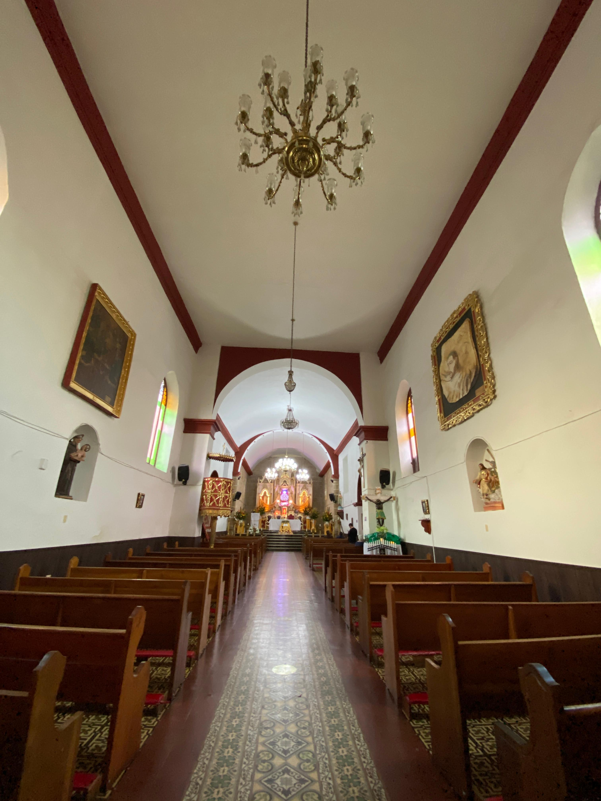

Más plastos tipicos


¿Por qué son importantes los postres?
Los postres de Iza son esenciales para su cultura porque representan la identidad local, mantienen vivas las tradiciones, y atraen el turismo. Son símbolo de hospitalidad, orgullo regional y parte del patrimonio cultural de la región.
Más recetas

Trucha Arcoiris
Diam lorem dolore justo eirmod lorem dolore
Diam lorem dolore justo eirmod lorem dolore

Datos Curiosos sobre el municipio de Iza
Es el municipio de Colombia con el nombre más corto.
MUNICIPIO DE
IZA
Iza, un rincón encantador de Boyacá donde la tranquilidad y la tradición se abrazan entre montañas.
Follow Us
Contacto
+57 314 3434912
municipiodeiza23@gmail.com